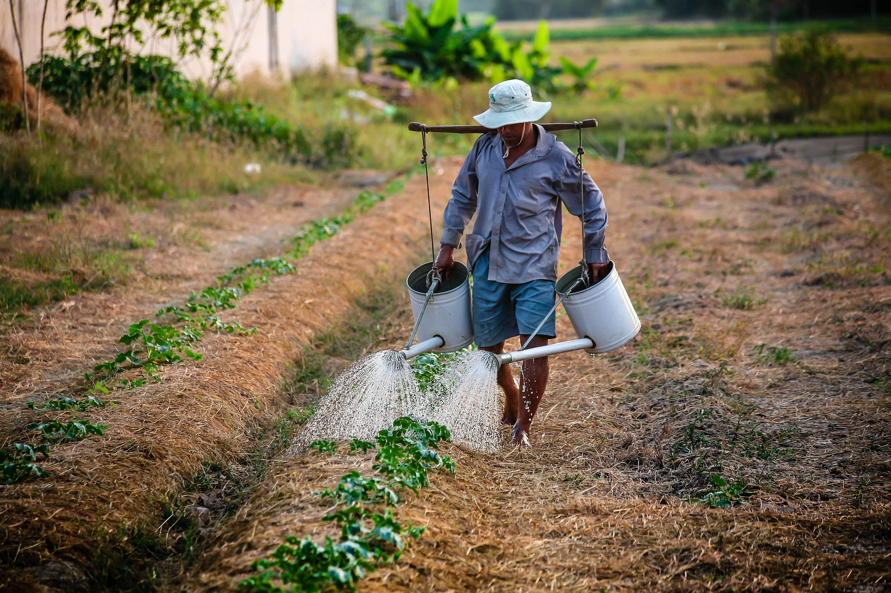

Water Management in Farming: Cultivating Sustainable Growth!
Water management, Water Resuse in Agriculture
Water is the lifeblood of agriculture. Effective water management is crucial for maximizing crop yields, conserving precious resources, and ensuring the long-term sustainability of farming operations. Efficient irrigation practices, coupled with strategies for water conservation and drought resilience, are essential for navigating the challenges of a changing climate and growing global food demand.
Traditional irrigation methods, such as flood irrigation, often
involve significant water losses due to evaporation and runoff.
Modern approaches, like drip irrigation, deliver water directly to
the plant roots, drastically reducing waste. Sprinkler irrigation,
while suitable for various crops, can also be improved with
technologies like variable rate irrigation (VRI), which tailors
water application based on specific field conditions.
Micro-irrigation techniques, including subsurface drip irrigation,
further enhance efficiency by minimizing evaporation and precisely
targeting water delivery.
Implementing effective water management
practices is not only essential for the success of individual farms
but also for the overall health and sustainability of the
agricultural sector. By embracing water-efficient technologies and
adopting conservation-minded approaches, farmers can ensure a
reliable water supply for their crops while protecting this vital
resource for future generations.

HELLO, I'M ALBERT.
Cultivating a future of sustainable farming through smart water management. Efficient irrigation, conservation, and resilience are key to thriving harvests.
EXPLORE TOPICS
- Rainwater Harvesting
- Smart Irrigation Systems
- Subsurface Drip Irrigation
- Soil Moisture Monitoring
- Crop Selection